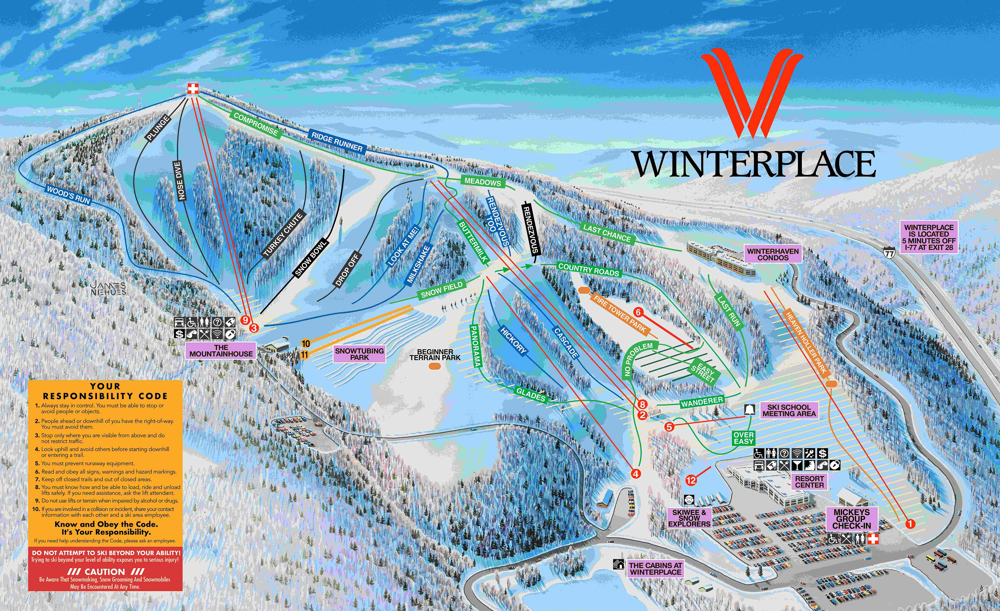

I’m new to skiing… how can I get started?
Skiing is an artform, truly. Once you’re in it, you can’t stop. It might take over your life, and that’s ok—let it.
It’s exciting to try new things! Skiing can be a bit intimidating in the beginning stages with all the gear you need, the travel plans, the accomodations, and the actual skiing part. However, none of that is to discourage you! (Though it might seem otherwise.) Despite all the intricacies that go into skiing, it truly is a labor of love.
To get into skiing, the very first thing you should consider is gear. It might be beneficial to rent ski gear for the first time in case you find the sport isn’t for you.
However, if you’re ready to buy, there are a plethora of sites to meet your every need. Steep and Cheap is a great website that offers quality gear at a discounted price. In a similar vein, second-hand websites such as Ebay or Facebook Marketplace are also good places to look for cheap gear from people near you.
Of course, you don’t have to go cheap. If you have the means to buy new gear, here are my reccomendations:
Unfortunately there aren’t many ski shops in or around Blacksburg, so it might be in your best interest to shop online or wait to go back to your hometown if there’s a ski shop near there.
Now, where the heck are you going to go? What mountains are beginner friendly? What mountains are even nearby?

The mountain Winterplace is located about an hour from Virginia Tech’s campus in West Virginia. Winterplace is extremely beginner friendly with reasonably low rates as far as skiing goes (this stuff ain’t cheap!). Otherwise, there are numerous other mountains within a couple hour radius of the Blacksburg area.
Those are the basics! Don’t worry, as you get started, everything will fall into place. Everyone starts somewhere, so don’t be discouraged by others around you on the slopes. Go at your own pace, and just have fun!
Here are a few more tips for new skiers to keep in mind:
Happy shredding! :)